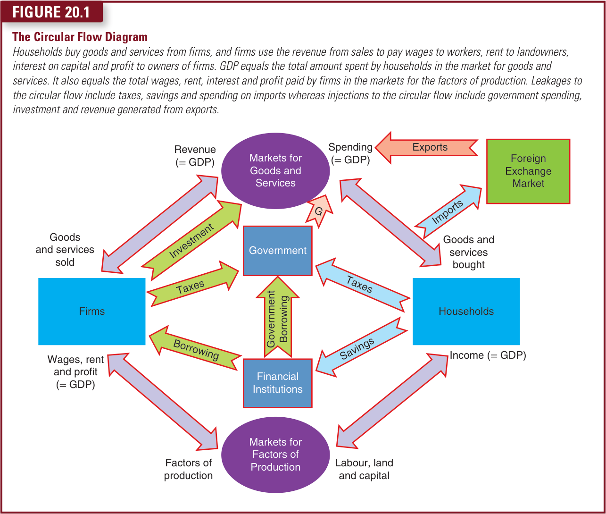

20.2The Circular Flow of Income
The equality of income and expenditure can be seen through the circular flow diagram in Figure 20.1. This is a model which describes all the transactions between households and firms in a simple economy. In this economy, the market for goods and services is where households and firms interact through firms providing goods and services which are bought by households. The spending by households on these goods and services represents the revenue of firms. The two also interact in the market for factors of production. Firms use the money they receive from the sale of goods and services to purchase the factors of production (land, labour, capital and enterprise) from households who provide these factor services. The factor incomes received by households (wages, rent, interest and profit) are used to pay for goods and services. In this economy, money flows from households to firms and then back to households.
Not all of the incomes households receive are spent in the market for goods and services. Some of this income is subject to tax which is paid to the government. Some income will be saved, and the funds find their way into financial institutions in the form of pension saving, insurance and assurance, and saving in bank accounts. Some of the income spent on goods and services by households leaves the economy in the form of spending on imports. Similarly, some of the income (Y) received by firms is paid to the government in business taxes. Taxes (T), saving (S) and spending on imports (M) are referred to as leakages from the circular flow.

Governments use tax revenue and borrowing from financial institutions to spend on government services and investment on infrastructure, education, health, defence and so on, representing government spending (G) which goes back into the circular flow. Firms make use of the funds provided by savers in financial institutions through borrowing to finance investment spending on new plant, equipment and expansion. This investment (I) finds its way back into the market for goods and services. Firms will also sell some of the goods and services they produce abroad, and so the revenue from exports (X) flows back into the system. Financial institutions also lend money overseas and firms overseas invest money into the country which is recorded as net capital outflow (NCO). Government spending (G), investment spending (I) and revenue from exports (X) are referred to as injections to the circular flow.
In theory, measuring GDP through income or expenditure will arrive at the same result. National income (NY), national expenditure and GDP are invariably used synonymously. A common measure of showing GDP is to add up the sum of expenditures in the economy – consumer spending (C), investment spending (I), government spending (G) and the difference between the amount paid out on imports (M) and that received in exports (X) (net exports: (X−M) or NX). This provides a measure of GDP given by the following equation:
GDP (NY) = C + I + G + NX
What two things are measured by GDP? How can it measure two things at once?
20.3The Measurement of Gross Domestic Product
Gross domestic product (GDP) is the market value of all final goods and services produced within a country in a given period of time.
Let’s consider each phrase in this definition.
20.3.1‘GDP Is the Market Value …’
GDP adds together many different kinds of products into a single measure of the value of economic activity. To do this, it uses market prices. Because market prices measure the amount people are willing to pay for different goods, they reflect the value of those goods. If the price of an apple is twice the price of an orange, then an apple contributes twice as much to GDP as does an orange.
20.3.2‘… Of All …’
GDP includes all items produced in the economy and sold in markets. GDP measures the market value of not just apples and oranges but also pears and grapefruit, books and films, haircuts, healthcare and so on.
GDP also includes the market value of the housing services provided by the economy’s stock of housing. For rental housing, this value is easy to calculate – the rent equals both the tenant’s expenditure and the landlord’s income. Yet many people own the place where they live and, therefore, do not pay rent. The government includes this owner occupied housing in GDP by estimating its rental value. That is, GDP is based on the assumption that the owner, in effect, pays rent to themselves, so the rent is included both in their expenditure and income.
[End of the assigned extract, p. 438. The chapter continues with the measurement of GDP.]
This extract from Chapter 20 is here because of one drawing: the whole economy as a circle. It ends where the definition of GDP is half done; the rest of the chapter comes later in this course.
20.2The Circular Flow of Income
On 1 July 2025 Glovo, the Barcelona delivery firm, stopped using self-employed riders in Spain; about 14,000 riders became its employees. The bikes and the orders did not change, but the money arrived as a wage instead of a fee per delivery. Who is selling what to whom, and which way does the money go round?
A student flat is a household, and every business, from Glovo to the bar on the corner, is a firm. In the market for goods and services, firms sell and households buy. In the market for factors of production it is the other way round: households sell and firms buy.
Pay for a menú del día. The restaurant keeps none of it for long. The money goes out again as the waiter’s wage, as rent, as interest on the loan that paid for the kitchen (the capital is the kitchen, not the loan), and the rest is the owner’s profit. The book counts the owner’s job as a fourth factor, enterprise: combining the other three and carrying the risk. Waiter, landlord, saver and owner are all households, and the firm paid each of them for the use of something it did not own. The same goes for a Glovo rider’s hours. Spending on one side of the circle turns into income on the other, and the figure follows one lunch round.
The two rings run in opposite directions, which confuses almost everyone at first. If the arrows blur, follow the money ring and ignore the other one for a while.
Some income goes to the government as tax, some is saved, and some pays for a phone assembled in China and leaves the country. Each has a road back, though. The government spends what it collects. The bank lends the savings on to a firm that wants a new oven, and that is investment. People abroad buy things made here: exports. Saving in particular does not vanish from the economy; it only changes hands.
Add up the spending on what the country produces: consumer spending C plus the three injections, minus imports M, because part of C, I and G went on things produced elsewhere. The total is gross domestic product, and since the loop turns every euro spent into a euro earned, it is also national income, NY, which is why we can write:
GDP (NY) = C + I + G + NX, where NX = X − M is net exports.
Foreign visitors spent €134.7 billion in Spain in 2025, almost a fifth of it in Catalonia. A family from Lyon paying for dinner in Barcelona is buying a service produced in Spain, so it is an export, X, even though the dinner never left the country; the buyers came to it. A family from Barcelona spending a weekend in Lisbon is the same logic in reverse, and the hotel bill is Portugal’s export and Spain’s import, M. Source: Ministry of Industry and Tourism (INE data), 3 February 2026.
After tax, Núria earns €1,500 a month, spends €1,320 and puts €180 in the bank. Is the €180 a leakage, and how can it come back? (Invented numbers.)
Show the answer
§20.2 draws the full diagram, the book’s Figure 20.1, with the government, the financial institutions and the rest of the world, and has firms paying tax too. It also names net capital outflow, which Chapter 25 takes up.
20.3The Measurement of Gross Domestic Product
On 18 September 2026 INE, Spain’s statistics office, corrected its figures again: the economy grew 3.7 % in 2024, not the 3.2 % first published. What exactly is the number being revised?
Take the definition a phrase at a time. Market value: prices are the unit. You cannot add haircuts to loaves of bread, but you can add what people paid for them.
All: everything that is sold in a market, and one thing that is not. If you own the flat you live in, nobody pays rent for it, so the statisticians estimate what the rent would be and count that. A cleaner you pay is in GDP; the same hour spent cleaning your own home is not.
§20.3.1 and §20.3.2 take the definition phrase by phrase, with apples and oranges for “market value” and the housing stock for “of all”. The rest of Chapter 20 finishes the definition and asks what GDP misses, later in this course.
What you can now do
- Trace a lunch bill to wages, rent, interest and profit.
- Say which side of each market a household stands on.
- Sort a payment into leakage or injection, and name who turns one into the other.
- Explain why output, income and spending are one number.
- Read GDP = C + I + G + NX off the diagram, and say why imports are subtracted.